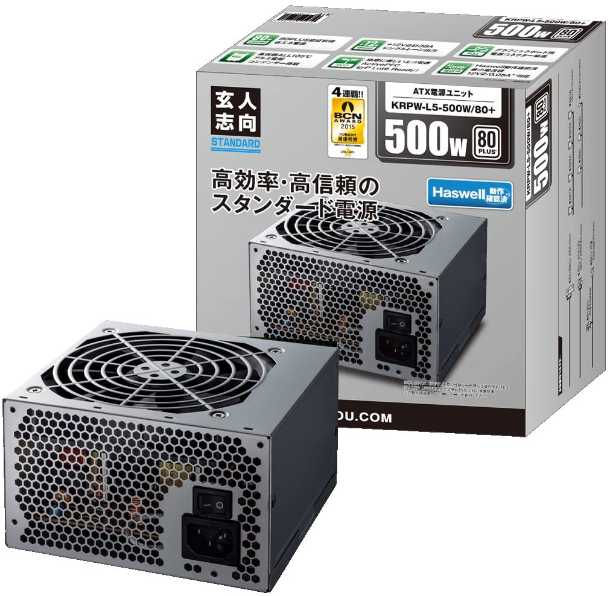

3. Home build PC¶
自作(ゲーミングPCを作って見たい人のページ)
3.1. 必要なもの¶
自作PCを作成するにあたり必要なパーツは
cpu
メモリー
マザーボード
電源
ストレージ
ケース
オプションとして
グラフィックボード(CPUに内蔵グラフィックがなかったり、ゲームをする予定なら必須)
マウス
キーボード
cpuグリス
となる。ここでは、自分が使用したパーツと周辺の価格帯の製品を比較する。
3.2. cpu¶
cpuはintelのcore-iシリーズとAMDのryzenシリーズがある。近年はAMDがイケイケな感じで低価格。
言うまでもないがcore-iシリーズとryzenシリーズでは形が違うためマザーボードが変わってくる。
| Product | Ryzen 5 3500 | Ryzen 7 2700 | Ryzen 5 3600 | Ryzen 7 3700X |
|---|---|---|---|---|
| Image |  |
 |
||
| Desc | とにかく予算を抑えるならこれ。apex, fortnite程度なら余裕で動くと思う。 他の重いゲームをしたいなら上位モデルを選ぼう。 |
1世代前のCPUだがまだまだ現役で戦えるCPU。 在庫限りなのでうまく見つけないと高いかも。 7シリーズだからcpuクーラーにLEDがついているのもポイント。 |
筆者が選んだcpu。新しい第3世代のcpu。12スレッドと十分すぎる性能。 クーラにLEDがついてないのが残念である。 |
より上位のモデル。8コア16スレッドは伊達じゃない。 思いタイプのゲーム(FF15)を検討するなら候補に入るか？ |
| Link |
3.3. メモリー¶
8GBが限界。しかし、ゲームをするなら16GB積んでおこう。
ちなみに16GB x 1より8GB x 2のほうがデュアルチャネルで利用できるので早い。
以下16GBでの比較。
| Product | Crucial CFD | TEAM | HYPER X |
|---|---|---|---|
 |
 |
 |
|
| Desc | いつもこれ安いけどなんでこれ安いん？ ただ利用者も多く信頼性も高い |
筆者が選んだメモリー。 安心のTEAM製。 |
メモリーもピカピカさせたい人向け。 |
3.4. マザーボード¶
第2.3世代RyzenはB450チップセットという種類で動作する。
またサイズも3種類あるが中サイズにあたるMicro ATX(M-ATX)で比較。
| Product | MSI B450M-A PRO MAX | ASROCK B450M Pro4 | ASROCK B450 STEEL LEGEND |
|---|---|---|---|
 |
 |
 |
|
| Desc | 今は8000円で買う価値もないが、6000円で売っているときがある。そのときに買えればお得だ。 補助電源が4pinと少なく電力不足と感じるときもあるらしい。(Amazonレビューより) |
8000円ならこっちを買ったほうがいい。 | 筆者の購入したマザーボード。10000円周辺で光らせたいとか少し良いものが欲しかったらこれ。 |
3.5. 電源¶
電源は使うCPUやグラッフィックボードによって変わる。特にRadeonグラッフィックカードは電力消費が激しいので大きめの電源を買おう。(600W以上)
| Product | 玄人志向 500W Standerd | 玄人志向 500W Bronze | 玄人志向 600W Bronze | Thermaltake 600W Gold |
|---|---|---|---|---|
|  |  |
|||
| 最安電源。 NVIDIAのグラッフィックボードなら行けるかも。 |
左と容量は同じだが電力効率が少し上がったもの。 | 容量を少し上げてRadeonグラッフィックボードにも対応。電源はいいもの買っとけ派の人はこれ。 | ピカピカ大好きマンはこれ。ただ電源をしまう場所に入れたら見えない気がするのだが… | |